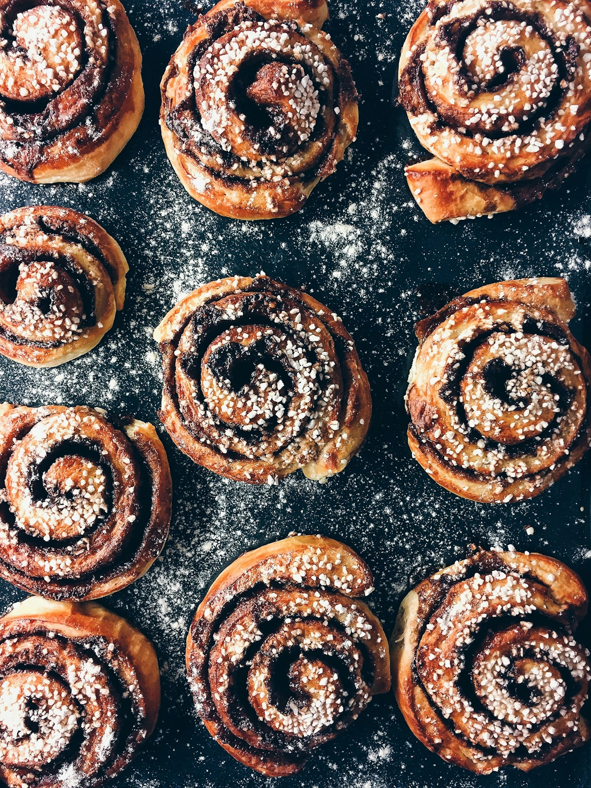

Elegí tus favoritos
Recorré el menú y agregá todo lo que te tiente a tu pedido.
PEQUEÑOS ANTOJOS. GRANDES MOMENTOS.
Algo dulce para tu tarde. Algo rico para compartir.
Encontrá tu próximo favorito en Majo’s Meals.

La vida sabe mejor
con algo rico.
De mi cocina
a tus momentos.
LA COCINA DE MAJO
Una merienda que se alarga, una charla entre amigos, ese gustito después de un día largo. Creemos que siempre hay un buen momento para disfrutar algo hecho en casa.
Por eso, en Majo’s Meals ponemos cariño en cada preparación. Para que te lleves mucho más que algo rico.
ASÍ DE SIMPLE
Recorré el menú y agregá todo lo que te tiente a tu pedido.
Revisá las cantidades y copiá el resumen con un clic.
Enviá tu pedido por Instagram para consultar disponibilidad y coordinar la entrega.
SIEMPRE HAY UNA BUENA EXCUSA
@majosmealss